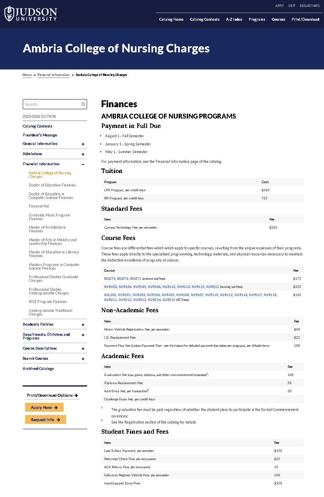
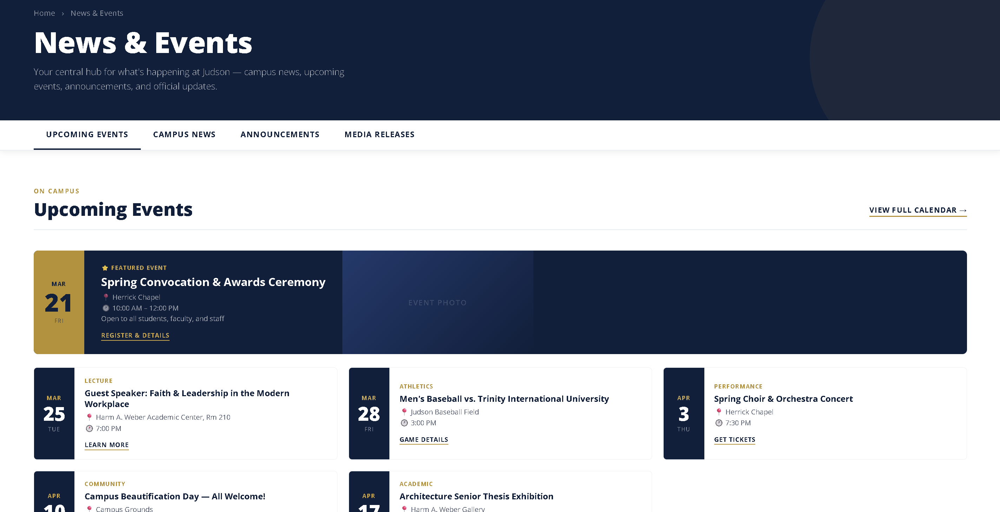

Overview
Working Inside a University's Digital Ecosystem
As a Web & Digital Communications Assistant at Judson University, I maintain and update web content across multiple institutional sites to support marketing campaigns, events, and communications. Two of the pages I built stand as distinct examples of what that work looks like in practice — one is a content migration and redesign, and the other a full page designed and implemented from scratch.
Both pages required working within established design systems, aligning with university branding standards, and collaborating cross-functionally with marketing staff.
Project 01 — Ambria College of Nursing
Tuition & Fees Page
View Live Page ↗The fee information for Ambria's nursing programs existed only in the university's academic catalog — a dense, navigation-heavy reference document shared across all Judson programs. Prospective nursing students looking for tuition costs on the Ambria website had no direct page to land on.
The task was to extract that content and rebuild it as a purpose-built page within the Ambria site, matching the site's design system and making the information immediately scannable for someone evaluating whether to enroll.


Extracted and structured fee data from the academic catalog into logical grouped sections. Built the page in WordPress matching Ambria's established visual design system. Formatted fee tables for clarity, prioritizing scannability over catalog-style density.
Project 02 — Judson University
News & Events Hub
View Design File ↗Judson University lacked a single, centralized hub for campus news and events. Information was spread across separate department pages, a calendar system, and press release archives — requiring users to know which section to navigate to before they could find anything.
I designed and implemented this page from scratch: the architecture, the visual layout, and the WordPress implementation. The goal was a single destination that consolidates upcoming events, campus news, announcements, and media releases under one organized interface.

Designed the full page layout from scratch, including information architecture across four content categories. Built tabbed navigation — Upcoming Events, Campus News, Announcements, Media Releases. Designed the featured event card component with a visual hierarchy that anchors the page. Implemented within Judson's design system using the university's established navy and gold brand colors.